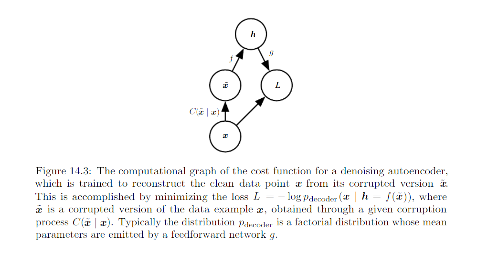
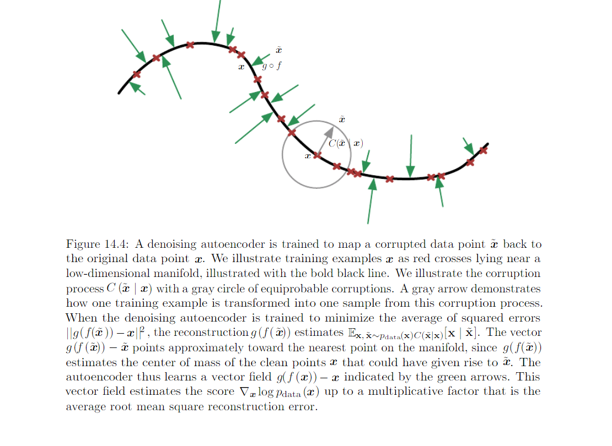

14.5 Denoising Autoencoders¶
Denoising autoencoder (DAE) is an autoencoder that receives a corrupted data point as input and is trained to predict the original, uncorrupted data point as its output.
Learns reconstruction distribution \(p_{reconstruct}(x|\hat{x})\) by
- Sample x from training data
- Sample a corrupted version \(\hat{x}\) from \(C(\hat{x}|x = x)\)
- Use \((x|\hat{x})\) as training example for estimating the autoencoder reconstruction distribution p_{reconstruct}(x|hat{x}) which is equal to \(p_{decoder}(x|h)\). (h: the output of encoder \(f(\hat{x})\). decoder: g(h))
We can view the DAE as performing statistic gradient descent on the following expectation:
Where \(\hat{p}_{data}(x)\) is the training distribution
Score matching: encourage the model to have the same score as the data distribution at every training point x. In this context, the score is
Learning the gradient field of \(logP_{data}(x)\) is one way to learn the structure of \(P_{data}\) itself.
Important property of DAE: conditionally Gaussian p(x | h) makes the autoencoder learn a vector field (g(f(x)) - x) that estimate the score of the data distribution.
Training with squared error criterion
and corruption:
A generic encoder-decoder architecture may be made to estimate the score.